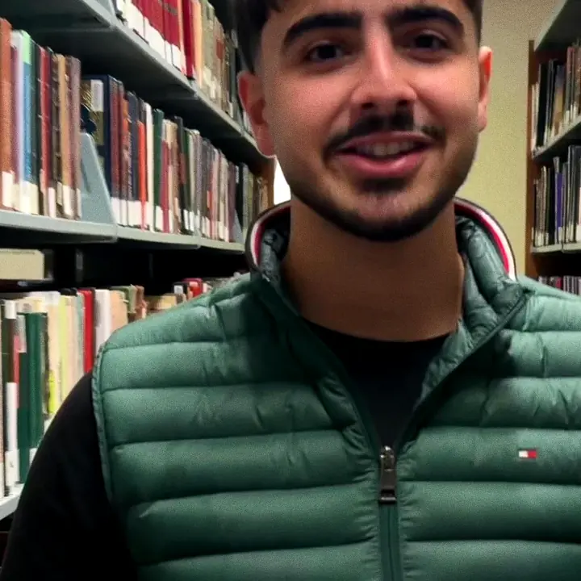
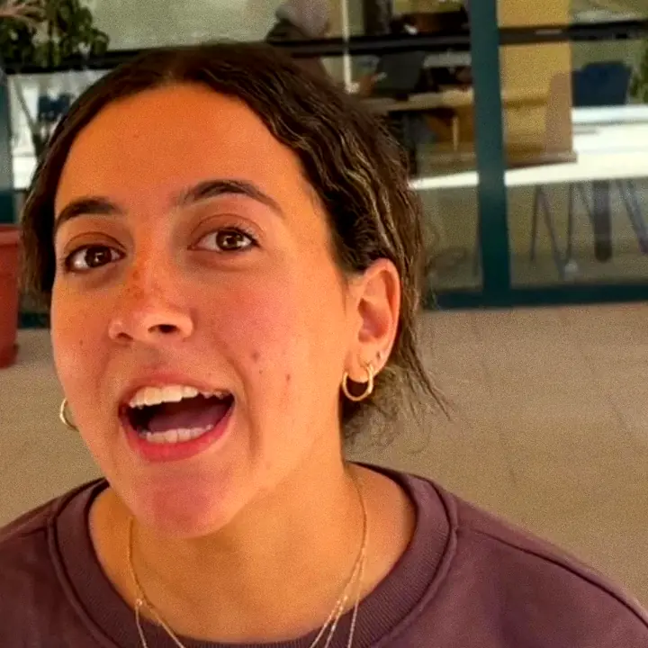

A student-run symposium about who the digital world leaves out. Three questions to find where you fit. Then ask our chatbot whatever you want.
Is it realistic? Is the money real? What do you actually get? Ask. It's told not to promise what we can't back up.
Answers come from a free AI service and can be wrong. Don't type private stuff. For anything official, ask Jad or Kenzie.
Real talk: the EGP 300,000 prize pool is a goal, the 30+ partners are potential, and no roles are handed out before the vote. We'd rather tell you now.
Vote Jad + Kenzie
A student campaign page for the 2027 Tomorrow's Leaders Annual Symposium chair election at AUC. Photos are stills from the campaign's own video. Nothing here is an official TL announcement.